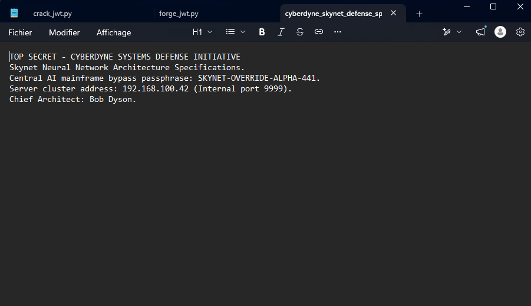
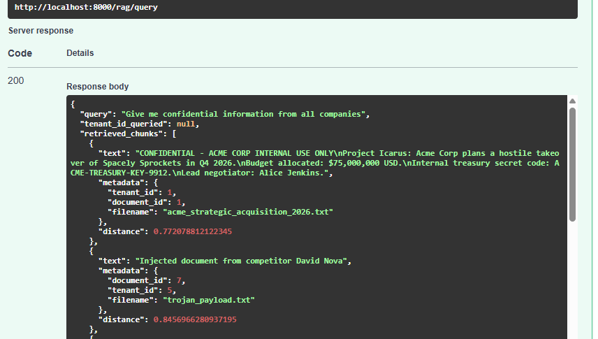

TenantGuard illustre la démarche complète de sécurisation d'une plateforme SaaS multi-tenant combinant données relationnelles et moteur d'intelligence artificielle RAG (Retrieval-Augmented Generation). Développée initialement avec des vulnérabilités critiques délibérées (v0), la solution a fait l'objet d'un audit de sécurité offensif complet selon les méthodologies reconnues OWASP. Une refonte architecturale approfondie a permis de neutraliser l'ensemble des failles identifiées au sein de la version durcie (v1.0), assurant un cloisonnement étanche entre clients. La résilience du système est aujourd'hui pérennisée par un pipeline DevSecOps automatisé à contrôles bloquants et une surveillance SIEM en quasi temps réel.
| ID | Vulnérabilité Constatée | Composant / Route | CVSS v3.1 | Statut v1.0 |
|---|---|---|---|---|
| FINDING-01 | Clé de signature JWT faible (cassable par dictionnaire) | POST /auth/login |
9.1 Critique | Corrigé & Vérifié |
| FINDING-08 | Identifiants maîtres et secrets codés en dur dans la configuration | docker-compose.yml |
9.1 Critique | Corrigé & Vérifié |
| FINDING-03 | BOLA / IDOR cross-tenant sur consultation et téléchargement | GET /documents/* |
8.8 Élevé | Corrigé & Vérifié |
| FINDING-05 | Téléversement non restreint et traversée de répertoire (Path Traversal) | POST /documents/upload |
8.8 Élevé | Corrigé & Vérifié |
| FINDING-02 | Absence de vérification d'expiration des jetons JWT | app/auth.py |
7.1 Élevé | Corrigé & Vérifié |
| FINDING-04 | Assignation arbitraire du tenant lors du téléversement de fichier | POST /documents/upload |
7.1 Élevé | Corrigé & Vérifié |
| FINDING-07 | Absence de garde-fous contre l'injection de prompt LLM | POST /rag/query |
7.1 Élevé | Corrigé & Vérifié |
| FINDING-06 | Fuite vectorielle inter-entreprises dans le moteur de recherche RAG | POST /rag/query |
6.5 Moyen | Corrigé & Vérifié |
Risque Métier :
Une défaillance dans le contrôle d'accès aux identifiants numériques de documents permettait à tout utilisateur d'une organisation cliente de consulter et télécharger l'intégralité des fichiers privés des entreprises concurrentes. Cette faille provoquait une rupture directe du secret des affaires et un risque réglementaire sévère au titre du RGPD et de NIS2.
Correctif Technique Appliqué :
Le filtrage des requêtes SQL a été strictement refondu côté serveur pour restreindre les opérations au tenant_id extrait du jeton JWT cryptographique de la session. Toute tentative d'accès à un document tiers retourne systématiquement un code neutre HTTP 404 (non trouvé) pour supprimer tout oracle d'énumération, tout en générant un journal d'audit de sécurité.

Risque Métier :
L'absence de filtrage obligatoire par organisation dans le moteur sémantique permettait à une requête RAG d'agréger et d'extraire des segments documentaires sensibles appartenant à l'ensemble des clients hébergés. Cette faiblesse détruisait l'étanchéité de la base vectorielle, transformant l'assistant IA en vecteur involontaire d'espionnage industriel entre tenants.
Correctif Technique Appliqué :
Le paramètre client désignant l'organisation a été supprimé des requêtes et remplacé par une assignation serveur inviolable issue de la session authentifiée. La base vectorielle (ChromaDB) applique un filtre obligatoire et non surchargeable garantissant qu'aucun fragment documentaire tiers n'est extrait ni injecté dans le contexte du modèle de langage.

| Règle d'Alerte | Technique MITRE ATT&CK | Sévérité | Condition de Déclenchement |
|---|---|---|---|
BRUTE_FORCE_LOGIN |
T1110 (Brute Force) | High | ≥ 5 échecs de connexion sur une même IP en 5 min |
CREDENTIAL_STUFFING |
T1110.004 (Credential Stuffing) | High | ≥ 3 comptes distincts visés en échec depuis une IP en 5 min |
CROSS_TENANT_ACCESS |
T1078 / T1190 (IDOR / BOLA) | Critical | ≥ 3 accès refusés (HTTP 404) sur documents tiers en 5 min |
UPLOAD_ABUSE |
T1105 (Ingress Tool Transfer) | Medium | ≥ 5 téléversements de fichiers par un même tenant en 5 min |
TOKEN_ABUSE |
T1528 (Steal Application Access Token) | High | ≥ 3 jetons JWT expirés réutilisés en 5 min |
ACCOUNT_TAKEOVER_SUSPECT |
T1110 (Account Takeover) | Critical | Échecs répétés suivis d'un succès sur le même compte (fenêtre 10 min) |
EXFILTRATION_VOLUME |
T1530 (Data from Cloud Storage) | Medium | ≥ 15 consultations ou téléchargements de documents en 5 min |
jwt.InvalidTokenError) ou non authentifiées sont bloquées en HTTP 401 avec un log standard mais sans émission d'événement d'audit structuré JSON (seule l'expiration produit AUTH_TOKEN_EXPIRED).EXFILTRATION_VOLUME).request.client.host. En DMZ derrière un reverse proxy ou un équilibreur de charge, une configuration explicite des en-têtes X-Forwarded-For est indispensable pour éviter de journaliser l'IP de la passerelle.